원래4square와 sine1/2/3/5/9kHz, 모두 같은 팬텀·ROI·좌표·피부 상한입니다. 위쪽 XY는 실제 native z17.41mm, 아래쪽 XZ는 +z가 상면0부터 깊이입니다. max/fixedTIS는 기본 두 carrier만 사용하며 RMS는 실제 전체 carrier(사각파 기준은3차 고조파 포함)입니다.
global_native_range는 전역 공통 눈금입니다. deep_ROI_display_clipped는 같은 ROI 기반 표시범위로 더 큰 값을 clipping한 별도 그림이며 통계·판정·활성화 역치를 바꾸지 않습니다. 5.1–10.1mm fat 층의 넓은 고전기장 띠를 깊이 집중으로 해석하지 않습니다.
중·고주파 수치 GUI · 낮은 주파수 수치 GUI · 출처·해시·표시 정의
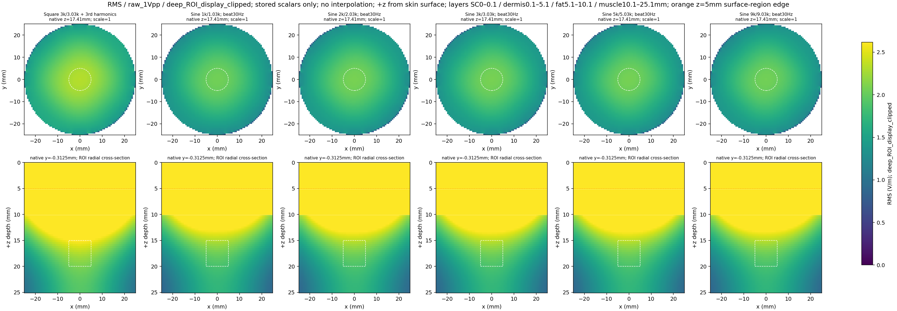
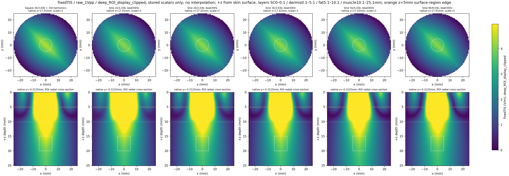
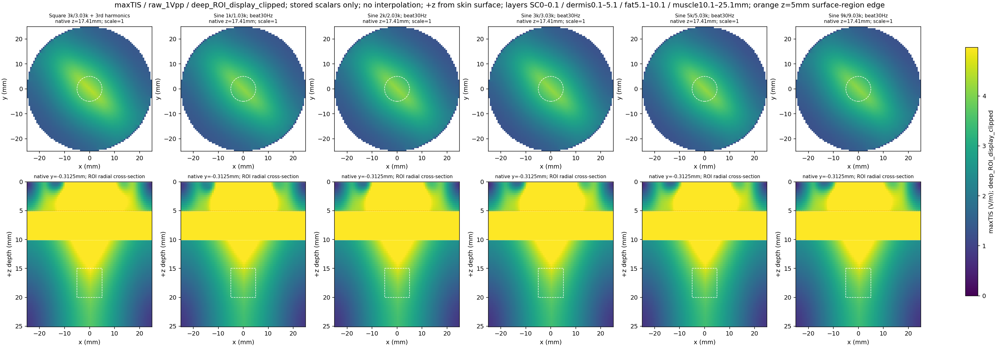
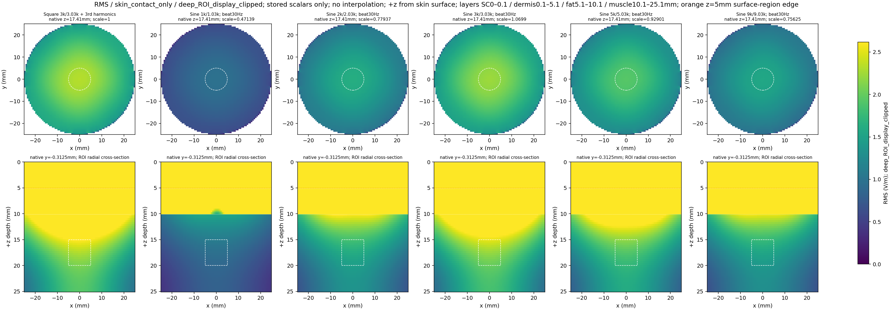
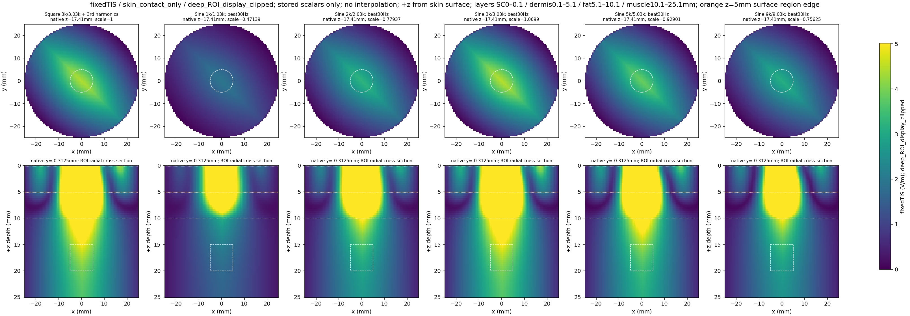
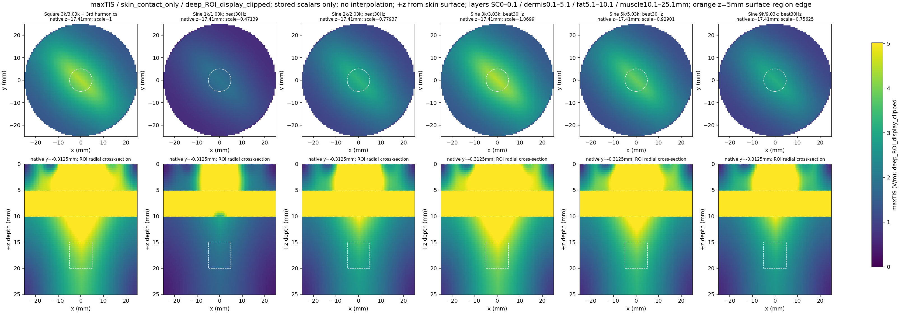
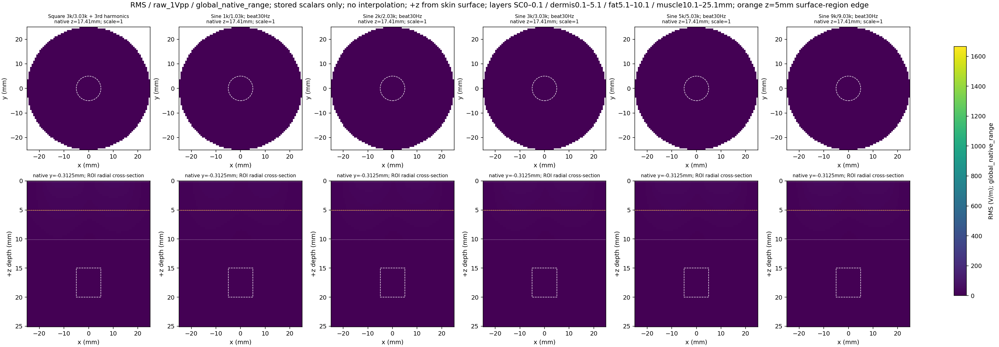
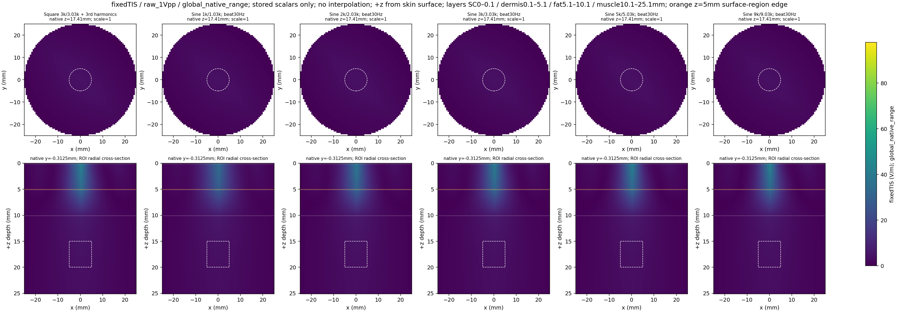
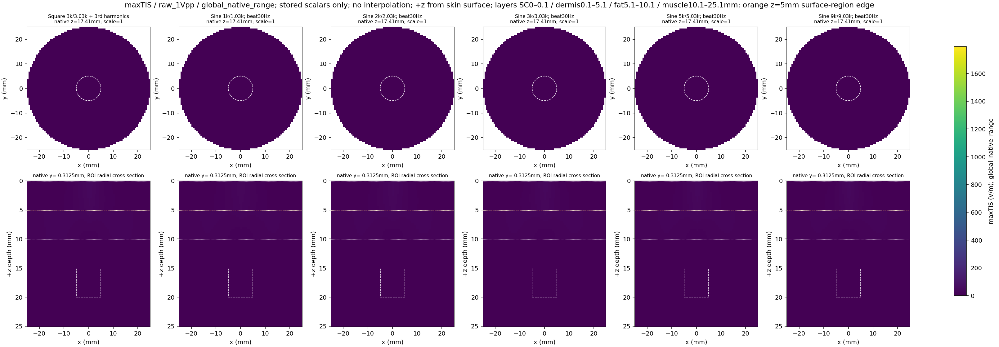
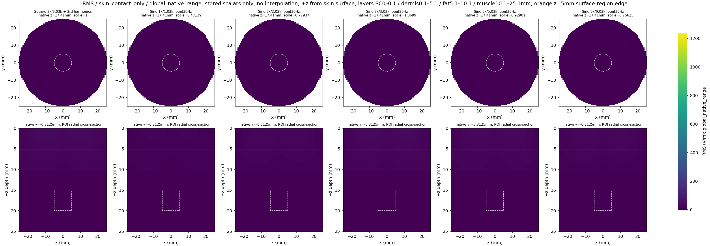
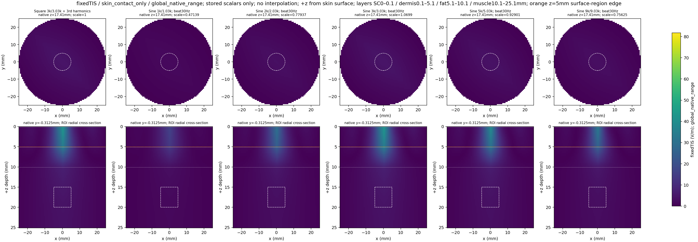